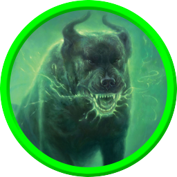

Kreaturen
Geisterhunde
Mit den Geisterhunden fing alles an, die Eichenfurt angegriffen und den Weißen Hirsch gejagt haben.

Kreaturen
Mit den Geisterhunden fing alles an, die Eichenfurt angegriffen und den Weißen Hirsch gejagt haben.
